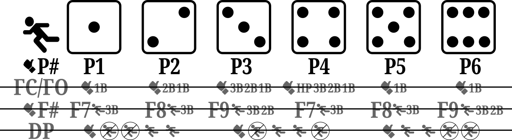
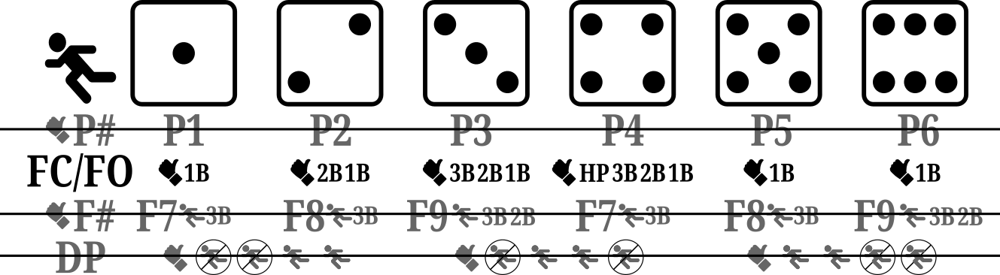
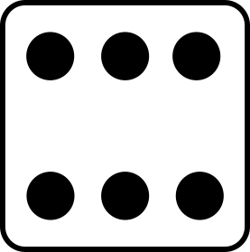
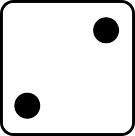
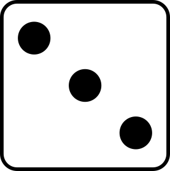
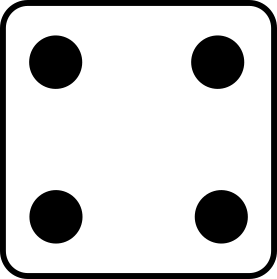
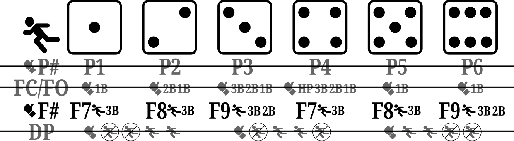
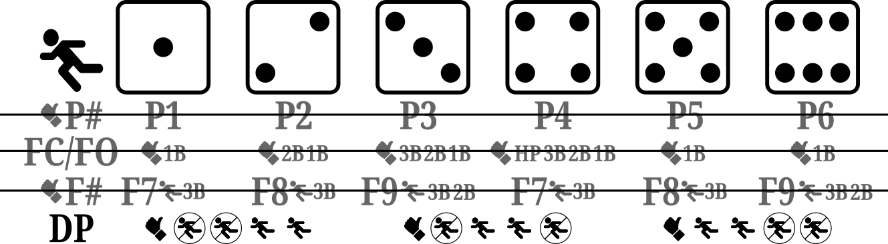

Extended play summary
Copyright © Crane Softwrights Ltd.
Development: https://github.com/CraneSoftwrights/board-baseball
Tip jar: https://paypal.me/CraneSoftwrights
Browser pages:
https://cranesoftwrights.github.io/board-baseball/en/X-PLAYS.md.html
P# - Pop-out

- the ball is popped up and caught by the infielder indicated by
the number on the die
- the batter is out and the runners do not advance
FC/FO - Fielder’s
choice and force-out

- the batter and all runners try to advance one base
- the ball is fielded by the infielder indicated by the number on
the die
- the number on the die is associated with a single out as
indicated, listing in priority order the base at which one of the
runners is found and called out
- ,
, and
 indicate
“1B”
- the batter arriving at first base is forced out
- other runners that have advanced one base are safe
- a runner arriving at home scores a run
- 
indicates “2B”, and “1B”
- a base runner arriving at second base is forced out and the
batter is scored as reaching first base on a fielder’s choice
- if there is no runner arriving at second base, the batter
arriving at first base is forced out
- 
indicates “3B”, “2B”, and “1B”
- a base runner arriving at third base is forced out and the
batter is scored as reaching first base on a fielder’s choice
- if there is no runner arriving at third base, a base runner
arriving at second base is forced out and the batter is scored as
reaching base on a fielder’s choice
- if there is no runner arriving at second base or third base,
the batter arriving at first base is forced out
- 
indicates “H”, “3B”, “2B”, and “1B”
- a base runner arriving at home is forced out and the batter is
scored as reaching first base on a fielder’s choice
- if there is no base runner arriving at home, a base runner
arriving at third base is forced out and the batter is scored as
reaching base on a fielder’s choice
- if there is no base runner arriving at home or third base, a
base runner arriving at second base is forced out and the batter is
scored as reaching base on a fielder’s choice
- if there is no base runner arriving at home, third base, or
second base, the batter arriving at first base is forced out
F# - Fly-out

- the ball is fielded by the outfielder associated with the
number on the die
- the batter is out
- for all rolls of the die if there are less than two out, a
runner at third base reaches home and the run is scored
- if the ball is fielded by the right fielder, indicated by
or
, a
runner at second base reaches third base
- otherwise, runners at second base and first base remain at
their base
DP - Double play

- if there are less than two base runners, both the batter and
the base runner are out
- if there are two or three base runners:
- and
indicate
the two leading base runners are out and the batter and any other
base runner are safe at their new base
- and
indicate
the leading base runner and the batter are out and any other base
runners are safe at their new base
- and
indicate
the trailing base runner and the batter are out and any other base
runners are safe at their new base
Plays
1-1
- a home run
- the batter and all runners score
1-2
- a double
- all runners advance two bases and the batter ends up at second
base
1-3
1-4
- a single
- batter and all runners advance one base
1-5
1-6
- a single
- batter and all runners advance one base
2-2
2-3 
- a force out or a fielder’s choice (see
FC-FO)
2-4
- a force out or a fielder’s choice (see
FC-FO)
2-5
- a single
- all runners advance one base and the batter ends up at first
base
2-6
- a force out or a fielder’s choice (see
FC-FO)
3-3
- a single
- all runners advance one base and the batter ends up at first
base
3-4
- a triple
- all runners score and the batter ends up at third base
3-5
- a force out or a fielder’s choice (see
FC-FO)
3-6
4-4
- a single
- all runners advance one base and the batter ends up at first
base
4-5
4-6
- a force out or a fielder’s choice (see
FC-FO)
5-5
- a double
- all runners advance two bases and the batter ends up at second
base
5-6
6-6
- a home run
- the batter and all runners score